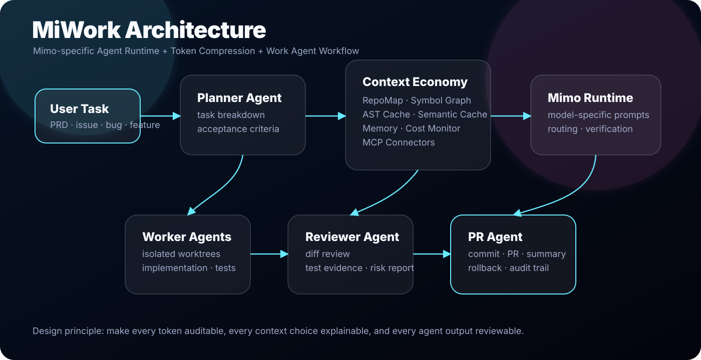

Interactive Atlas
产品分类地图 / Product Taxonomy
按交互入口、成熟度、模型目标、Token 策略和 MiWork 相关性筛选。卡片详情侧栏用于研究分析，Matrix View 用于横向对比。
Agent Acceleration & Token Economy
Agent 加速与 Token 经济层
把完整 Agent、插件 / Middleware、Skill / Rule / Prompt Layer、底层 Framework 分开看，便于判断哪些适合成为 MiWork 的基础设施。
MiWork Opportunity
MiWork = Mimo-specific Agent Runtime + Token Compression + Work Agent Workflow

Technical Modules
Risks
Opportunities
arXiv Draft Scaffold
Agent Coding and Token Economy Survey
论文草稿位于 paper/agent-roadmap-review.tex，已包含 taxonomy、formal definitions、related work、benchmark taxonomy、MiWork case study 与 BibTeX 引用。